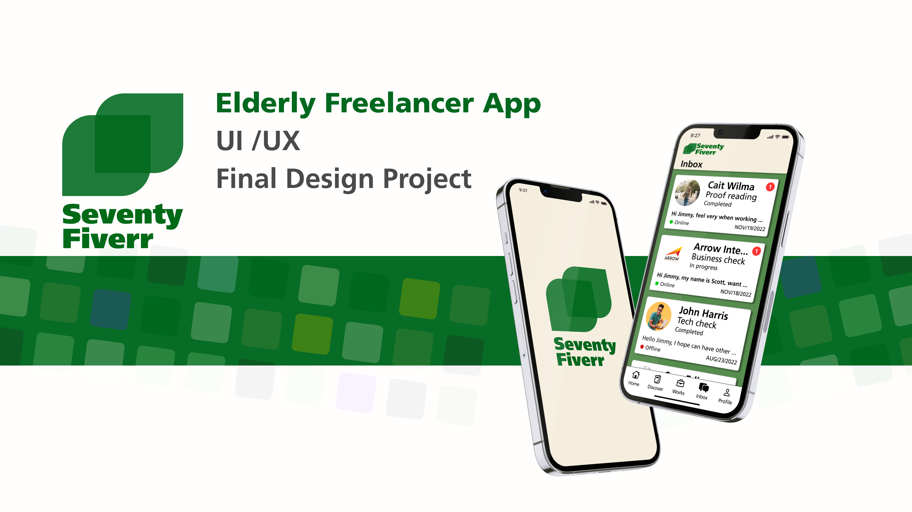

Web Design
EVER GREEN brings an exclusive, unique, high-quality selection of limited edition plants straight from our greenhouse to your home. Each variety is sourced, nurtured, and grown in small batches by our passionate Research & Development growers. Searching the globe for responsibly grown varieties that entice and excite plant lovers, we are constantly on the lookout for new and exciting plants to add to the assortment.

Mobile Interface
SeventyFiverr's design is focused on ensuring usability even for elders above 75. Unlike our competitors, SeventyFiverr tries to present relevant information and features as fully and in detail as possible but not overwhelmingly. The clarity is achieved by implementing usability heuristics, Gestalt principles, interview feedback, and a design style with a high contract, explicit affordance, and no distractions.